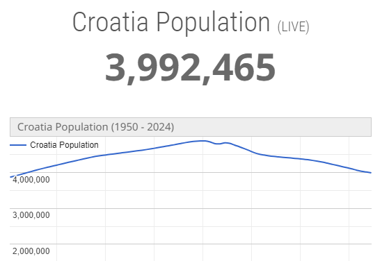

Geographic and Historical Context
Croatia, a picturesque country situated in Southeast Europe on the eastern side of the Adriatic Sea, has a population that reflects its rich history and diverse cultural heritage. As of recent estimates, Croatia's population hovers around 4 million people, making it one of the smaller countries in Europe in terms of population size. The population density varies across regions, with urban centers like Zagreb, the capital, experiencing higher concentrations of people compared to rural areas.
The Dominance of Croats
Historically, Croatia has been influenced by various civilizations and cultures, including Roman, Byzantine, Ottoman, and Austro-Hungarian empires. These influences have left a mark on Croatia's population composition, contributing to its ethnic diversity. The majority of the population identifies as Croats, constituting around 90% of the total population. Other ethnic groups include Serbs, Bosniaks, Hungarians, Italians, and various minorities.
Aging Population and Declining Birth Rate
One significant demographic trend in Croatia is its aging population. Like many European countries, Croatia is experiencing a demographic shift characterized by a declining birth rate and increasing life expectancy. This trend poses challenges for the country's economy and social welfare systems, including issues related to healthcare, pensions, and labor force participation.
Impact on Population Dynamics
Emigration has also played a role in shaping Croatia's population dynamics. Following the breakup of Yugoslavia in the 1990s and subsequent conflicts, Croatia witnessed significant emigration, particularly among young people seeking better economic opportunities abroad. While emigration has slowed in recent years, it continues to impact Croatia's population, contributing to demographic imbalances and brain drain.
Tourism and Temporary Population Swell
Despite these challenges, Croatia remains an attractive destination for tourists and expatriates alike, drawn to its stunning coastline, rich cultural heritage, and relatively high quality of life. Tourism plays a crucial role in Croatia's economy, contributing significantly to employment and GDP. The influx of tourists, particularly during the summer months, can temporarily inflate the population in coastal areas.
Coexistence and Pluralism
Croatia's population is also characterized by religious diversity. The majority of Croatians identify as Roman Catholic, owing to centuries of Catholic influence. However, there are also significant Orthodox Christian and Muslim communities, particularly among Serbs and Bosniaks, respectively. Religious tolerance is generally upheld, reflecting Croatia's commitment to secularism and pluralism.
Policies and Initiatives
In recent years, Croatia has made efforts to attract skilled workers and reverse the brain drain phenomenon. Initiatives aimed at creating a more favorable environment for entrepreneurship and innovation have been introduced, alongside measures to improve education and research infrastructure. Additionally, Croatia's accession to the European Union in 2013 has opened up opportunities for increased collaboration and mobility within the EU, potentially impacting future population trends.
Challenges and Opportunities for Croatia's Population
Croatia's population is a mosaic of diverse ethnicities, cultures, and religions, shaped by its tumultuous history and contemporary socio-economic factors. While facing challenges such as an aging population and emigration, Croatia continues to strive for sustainable development and inclusive growth, aiming to preserve its cultural heritage while embracing opportunities for progress and prosperity in the 21st century.